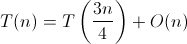

We can solve a 2D linear program in linear time. The key is that we need to throw away a constant fraction of data away at each step. We'll represent our constraints by a set of halfplanes and our objective function by a vector. The solution is the point in the intersection of halfplanes farthest in the direction of the objective vector. To make the visualization easier, we recognize that the halfplane is equivalent to a line representing the boundary of the halfplane together with a vector that indicates which side of the boundary corresponds to the halfplane. The vectors are not shown in the diagrams below but they are used in the demo at the end. The boundaries however are used throughout the tutorial to represent each halfplane (there's another element to indicate which side of the boundary we want). Also, without loss of generality, we assume that the objective function points down. If it doesn't, we can rotate the coordinate plane so that it does point down.
We start by first partitioning the halfplane boundaries into an upper set and a lower set. The upper set pushes the feasible region in the same direction as the objective vector, that is, the inner product between the halfplane vector and the objective function is positive. The lower set pushes the feasible region against the objective vector, that is, the inner product between the halfplane vector and the objective function is negative. Together, the intersection of all lower sets and all upper sets respectively define the lower envelope and the upper envelope. If there is no lower envelope, then the feasible region is unbounded, and the solution is at infinity.
Now we pair up lower boundaries with lower boundaries and upper boundaries with upper boundaries, and find the median pair in the x-direction. Through the intersection of this pair, we'll draw a vertical line. This median divider separates the data into two sets of pairs. We'll eventually discard half the lines in one of the two sets. This parts thus allows us to throw away a constant fraction of data at every step.
From the upper set, find the upper boundary that intersects the median divider at the lowest y value. From the lower set, find the lower boundary that intersects the median divider at the highest y value. We consider how these two lines intersect the median divider by cases.
Now it's time to throw away some data. We'll keep everything on the side of the median divider where the solution might be. On the other side, look at all the pairs of lines that we made earlier. For each pair of lines, one of the lines cannot form the envelope as we move towards the direction of the solution, so we can always throw away one of the two lines that form a pair. For upper pairs, throw away the line that takes on larger y values as we move toward the median divider. For lower pairs, throw away the line that takes on smaller y values as we move toward the median divider.
Now we're ready to start the next step of the algorithm
We consider two base cases here.
At the beginning of the algorithm, we partition the halfplane boundaries in linear time.
For each step of the algorithm, we do the following work:
The recurrence relation is thus:
The Master Theorem tells us that the solution to the recurrence relation is:
Since setting up and running the algorithm can both be accomplished in linear time, the overall algorithm is linear!